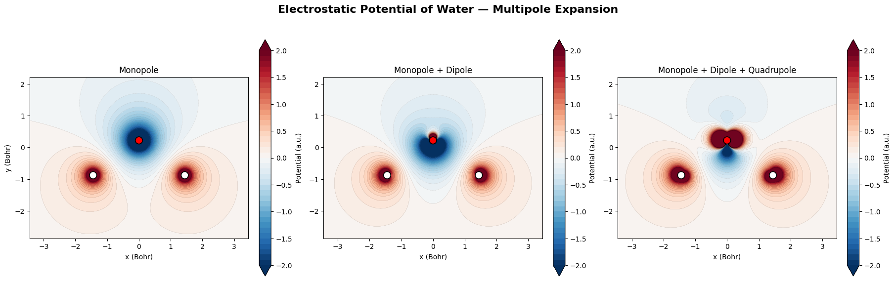
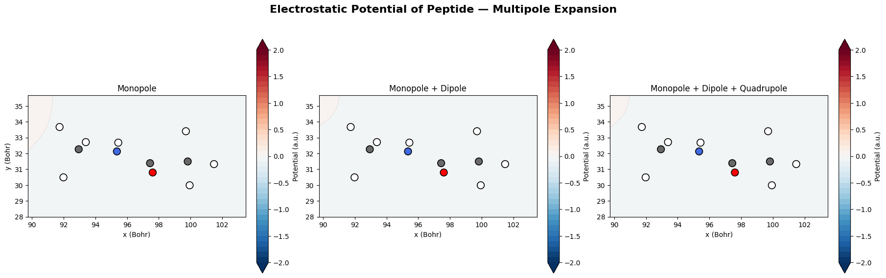

Multipole Electrostatics
in FFPrime
A new electrostatics module for FFPrime — Cartesian & spherical multipole potentials and fields, a unifying container, analysis utilities, and the validation to prove it.
Why FFPrime needs multipole electrostatics
FFPrime derives molecular-mechanics force-field parameters directly from a quantum-chemical electron density, using Atoms-in-Molecules (AIM) partitioning rather than empirical fitting. A single point charge per atom — the simplest possible electrostatic model — can't represent the anisotropy of a lone pair or a polarized bond, and AIM partitioning already produces richer information than that: dipole and quadrupole moments fall directly out of the same density partitioning.
What was missing was a way to use that information: a module turning atomic multipole moments into an actual electrostatic potential and field, in both representations the field commonly uses — Cartesian tensors and real spherical harmonics — with the numerical rigor scientific software demands.
Four pieces, one module
Cartesian Multipoles
✓ MergedGiven atomic charges, dipole vectors, and traceless quadrupole tensors, cartesian.py computes the electrostatic potential and field at an arbitrary array of field points — fully vectorized with np.einsum, no per-atom Python loop.
Technical details +
monopole/dipole/quadrupole_potential, _field, plus total_potential/total_fieldatcharges (N,), dipoles (N,3), quadrupoles (N,3,3), atomic units1e-12 replaced by inf — finite at a multipole's own sitedef monopole_potential(atcharges, atcoords, points):
# V(r) = sum_i q_i / |r - r_i|
_, _, safe_r = compute_displacement(atcoords, points)
return np.sum(atcharges[np.newaxis, :] / safe_r, axis=1)
Spherical Representation
✓ Mergedspherical.py adds the real spherical-harmonic representation used by force fields like AMOEBA: bidirectional Cartesian↔spherical conversion for dipoles and quadrupoles, plus direct potential evaluation without a Cartesian round-trip.
Technical details +
dipole/quadrupole_cartesian_to_spherical (+ inverse), spherical_total_potential/fieldquadrupole_field, rather than a separate spherical-field derivationExpansion + Analysis
✓ Mergedexpansion.py adds MultipoleExpansion, a typed container built via from_cartesian()/from_spherical(). analysis.py adds three field-comparison utilities: projection, cosine similarity, RMS deviation.
Technical details +
atcoords/atcharges/atdipoles/atquadrupoles — IOData naming, adopted after reviewer feedback.potential()/.field() method yet — evaluation still calls cartesian.py/spherical.py directlyproject_field, cosine_similarity, rms_deviationexpansion = MultipoleExpansion.from_spherical(
atcoords=atcoords, atcharges=atcharges,
atdipoles=spherical_dipoles, # (N, 3)
atquadrupoles=spherical_quads, # (N, 5)
)
Validation + Molecular Examples
● PR #19 under reviewFive test modules cover analytical, gradient, and cross-representation checks. Two example notebooks apply the module to real MBIS-partitioned molecules.
From moments to a validated field
Every contribution above moves through the same pipeline — the conceptual backbone of the project.
The Stone Convention
MultipoleExpansion, the conversion functions, spherical_total_potential, and the field path's conversion back to Cartesian.d160e72, part of PR #18.The Quadrupole Field Correction
Under the convention used by this implementation, the quadrupole potential is V = Θabrarb/r⁵. A first-pass gradient missed that a symmetric Θ is contracted twice with r — off by exactly a factor of two.
View implementation +
term1 = 5 * Qrr[..., None] * r_vecs / safe_r[..., None] ** 7 # Theta is symmetric: d/dr_c(Theta_ab r_a r_b) picks up Theta_cb r_b # from BOTH the a=c and b=c contractions -- hence the factor of 2. term2 = 2.0 * Qr / safe_r[..., None] ** 5 # corrected factor of 2 return np.sum(term1 - term2, axis=1)
cartesian.py — quadrupole_field(), verified symbolically and via finite differences in test_multipole.py and test_cartesian_quadrupole_field.py.Proving correctness, not just running code
Five dedicated test modules cover the main validation categories — closed-form checks, finite-difference gradient consistency (E = −∇V), and agreement between the Cartesian and spherical evaluation paths — with shared utilities in utils.py handling singularity-safe edge cases rather than standing as a test module of its own. Exact pass/fail counts are reported inline in PR review discussion rather than independently reproduced, so no aggregate test-count figure is claimed on this page.
View tests +
Water + peptide
Both notebooks are part of PR #19 — opened, not yet merged.
Water
● Under review
MBIS atomic multipoles from water.fchk are evaluated progressively through a MultipoleExpansion — monopole, then monopole + dipole, then monopole + dipole + quadrupole — showing how each higher-order moment reshapes the electrostatic potential.
Peptide
● Under review
The same monopole → dipole → quadrupole progression, demonstrated on a chemically larger and more heterogeneous peptide system — multiple residues, mixed polar/nonpolar environments — using peptide.fchk.
Water → peptide is a deliberate escalation in molecular complexity, not a claim about performance or scalability — no benchmarking data for either notebook exists in the repository.
From first PR to open review
Spherical + Validation
View full contribution history +
multipole.py (monopole/dipole/quadrupole potential & field, vectorized) + test_multipole.py. Merged Jun 12, 2026.cartesian.py/spherical.py. Reviewer feedback requested smaller PRs and atcharges/atcoords renaming to match IOData. Merged Jul 3, 2026.expansion.py, analysis.py; fixes quadrupole field convention; renames to at* attributes; adds three test modules. Merged Jul 31, 2026.examples/multipole_water.ipynb, multipole_peptide.ipynb, plus MBIS input/reference data. Opened Aug 2, 2026 — demonstration only.Three lessons
"A passing test is not the same as a correct derivative."
The quadrupole field's missing factor of 2 didn't fail loudly — it required deliberately checking E = −∇V against finite differences rather than trusting a formula "looked right." Fixed in commit d160e72, verified in test_cartesian_quadrupole_field.py.
"Scientific conventions become software contracts."
Adopting Stone's convention explicitly — and propagating it through conversion, evaluation, and tests — mattered more to correctness than any single function's implementation.
"Open-source review changes how you scope work."
Reviewer feedback on PR #15's size and naming led directly to smaller, more focused PRs afterward, and to renaming attributes to match IOData's at-prefixed convention.
Atomic moments existed without a downstream way to evaluate an electrostatic potential or field, and no spherical-harmonic representation to interoperate with the rest of the force-field literature.
Cartesian → spherical → potential → field → analysis → validation — built outward from a vectorized core, under an explicit convention, with tests designed to catch the errors a passing suite can hide.
A tested, reviewed, merged multipole electrostatics package spanning both representations, with two molecular demonstrations in active review.